Notebook: 2_finetune_deploy_huggingface
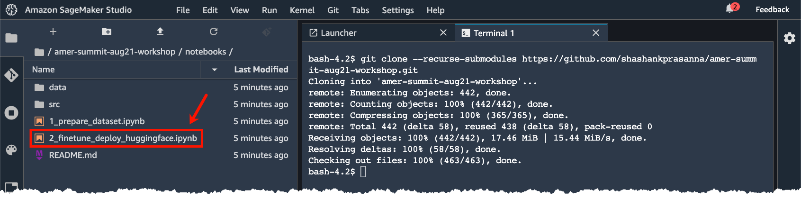
Watch the livestream to follow along with the presenter
Finetuning HuggingFace models with Amazon SageMaker
Install or upgrade sagemaker sdk and sagemaker debugger sdk
!pip install -Uq sagemaker smdebug
# Ignore warnings related to pipimport boto3
import time
import numpy as np
import pandas as pd
import json
from datetime import datetime as dt
from IPython.display import FileLink
import sagemaker
from sagemaker import TrainingJobAnalytics
from sagemaker.debugger import Rule, ProfilerRule, rule_configs
from sagemaker.debugger import ProfilerConfig, FrameworkProfile, DebuggerHookConfig
from smdebug.profiler.analysis.notebook_utils.training_job import TrainingJob
from smdebug.profiler.analysis.notebook_utils.timeline_charts import TimelineCharts
from sagemaker.huggingface import HuggingFace, HuggingFaceModel, HuggingFacePredictor
from sklearn.metrics import classification_report# permissions
sess = boto3.Session()
sagemaker_session = sagemaker.Session()
role = sagemaker.get_execution_role()
bucket = sagemaker_session.default_bucket()
prefix = "sagemaker_huggingface_workshop"
print(f"sagemaker role arn: {role}")
print(f"sagemaker bucket: {sagemaker_session.default_bucket()}")
print(f"sagemaker session region: {sagemaker_session.boto_region_name}")The training script that performs fine tuning is located here: src/train.py
Navigate to the source code location and open the train.py file. You can also go through it’s contents by executing the cell below.
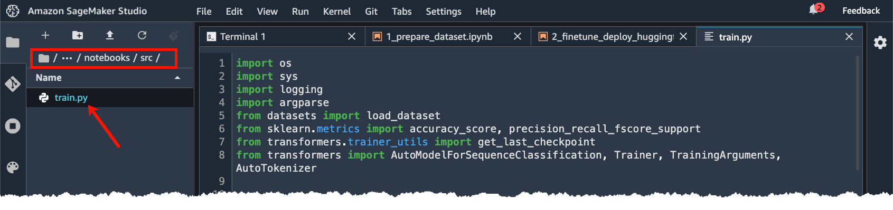
!pygmentize src/train.pyhyperparameters, which are passed into the training job
hyperparameters={'epochs': 1,
'train_batch_size': 32,
'model_name':'distilbert-base-uncased',
}List of supported models: https://huggingface.co/transformers/pretrained_models.html
metric_definitions=[
{'Name': 'eval_loss', 'Regex': "'eval_loss': ([0-9]+(.|e\-)[0-9]+),?"},
{'Name': 'eval_accuracy', 'Regex': "'eval_accuracy': ([0-9]+(.|e\-)[0-9]+),?"},
{'Name': 'eval_f1', 'Regex': "'eval_f1': ([0-9]+(.|e\-)[0-9]+),?"},
{'Name': 'eval_precision', 'Regex': "'eval_precision': ([0-9]+(.|e\-)[0-9]+),?"},
{'Name': 'eval_recall', 'Regex': "'eval_recall': ([0-9]+(.|e\-)[0-9]+),?"},
{'Name': 'eval_runtime', 'Regex': "'eval_runtime': ([0-9]+(.|e\-)[0-9]+),?"},
{'Name': 'eval_samples_per_second', 'Regex': "'eval_samples_per_second': ([0-9]+(.|e\-)[0-9]+),?"},
{'Name': 'epoch', 'Regex': "'epoch': ([0-9]+(.|e\-)[0-9]+),?"}]We specify the following rules:
ProfilerReport: runs the entire set of performance rules and create a final output report with further insights and recommendations.
# Configure a Profiler rule object
rules = [
Rule.sagemaker(rule_configs.loss_not_decreasing()),
ProfilerRule.sagemaker(rule_configs.LowGPUUtilization()),
ProfilerRule.sagemaker(rule_configs.ProfilerReport())
]The following configuration will capture system metrics at 500 milliseconds. The system metrics include utilization per CPU, GPU, memory utilization per CPU, GPU as well I/O and network.
Debugger will capture detailed profiling information from step 5 to step 15. This information includes Horovod metrics, dataloading, preprocessing, operators running on CPU and GPU.
# Specify a profiler configuration
profiler_config = ProfilerConfig(
system_monitor_interval_millis=500,
framework_profile_params=FrameworkProfile(num_steps=10)
)# s3 uri where our checkpoints will be uploaded during training
job_name = f'huggingface-sm-{time.strftime("%Y-%m-%d-%H-%M-%S", time.gmtime())}'
checkpoint_s3_uri = f's3://{bucket}/{prefix}/{job_name}/checkpoints'
output_path = f's3://{bucket}/{prefix}/training_jobs'
# create the Estimator
huggingface_estimator = HuggingFace(entry_point = 'train.py',
source_dir = 'src',
output_path = f'{output_path}/',
code_location = output_path,
role = role,
base_job_name = job_name,
checkpoint_s3_uri = checkpoint_s3_uri,
instance_type = 'ml.p3.2xlarge',
instance_count = 1,
transformers_version = '4.6',
pytorch_version = '1.7',
py_version = 'py36',
hyperparameters = hyperparameters,
metric_definitions = metric_definitions,
# Debugger-specific parameters
profiler_config = profiler_config,
rules = rules
)data = {'train': f"s3://{bucket}/{prefix}/data/train.csv",
'test': f"s3://{bucket}/{prefix}/data/validate.csv"
}
huggingface_estimator.fit(data, wait=True)Output: 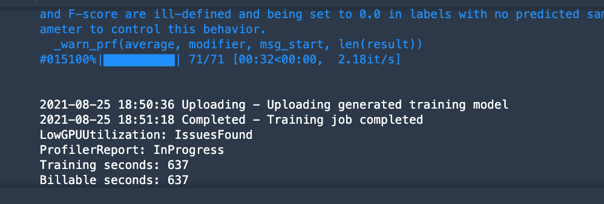
# Captured metrics can be accessed as a Pandas dataframe
training_job_name = huggingface_estimator.latest_training_job.name
print(f"Training jobname: {training_job_name}")
df = TrainingJobAnalytics(training_job_name=training_job_name).dataframe()
dfOutput: 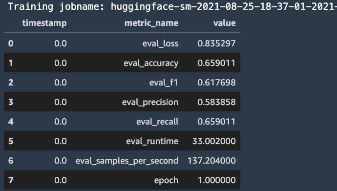
While the training is still in progress you can visualize the performance data in SageMaker Studio or in the notebook. Debugger provides utilities to plot system metrics in form of timeline charts or heatmaps. In the following code cell we plot the total CPU and GPU utilization as timeseries charts. To visualize other metrics such as I/O, memory, network you simply need to extend the list passed to select_dimension and select_events.
session = boto3.session.Session()
region = session.region_name
tj = TrainingJob(training_job_name, region)
tj.wait_for_sys_profiling_data_to_be_available()system_metrics_reader = tj.get_systems_metrics_reader()
system_metrics_reader.refresh_event_file_list()
view_timeline_charts = TimelineCharts(
system_metrics_reader,
framework_metrics_reader=None,
select_dimensions=["CPU", "GPU"],
select_events=["total"],
)Output: 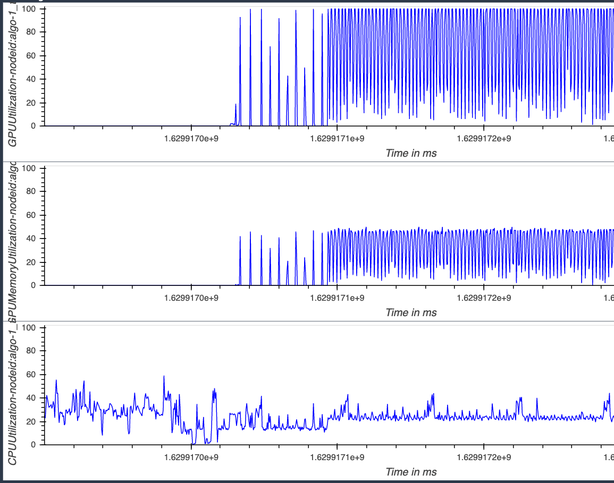
The profiling report rule will create an html report profiler-report.html with a summary of builtin rules and recommenades of next steps. You can find this report in your S3 bucket.
rule_output_path = huggingface_estimator.output_path + huggingface_estimator.latest_training_job.job_name + "/rule-output"
print(f"You will find the profiler report in {rule_output_path}")sagemaker_session.download_data(path = '.',
bucket = bucket,
key_prefix = f'{prefix}/training_jobs/{huggingface_estimator.latest_training_job.job_name}/rule-output/ProfilerReport/profiler-output/profiler-report.html')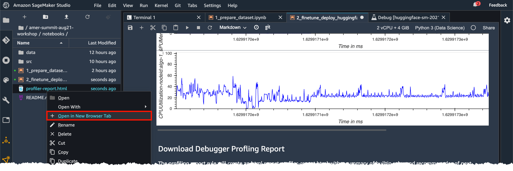 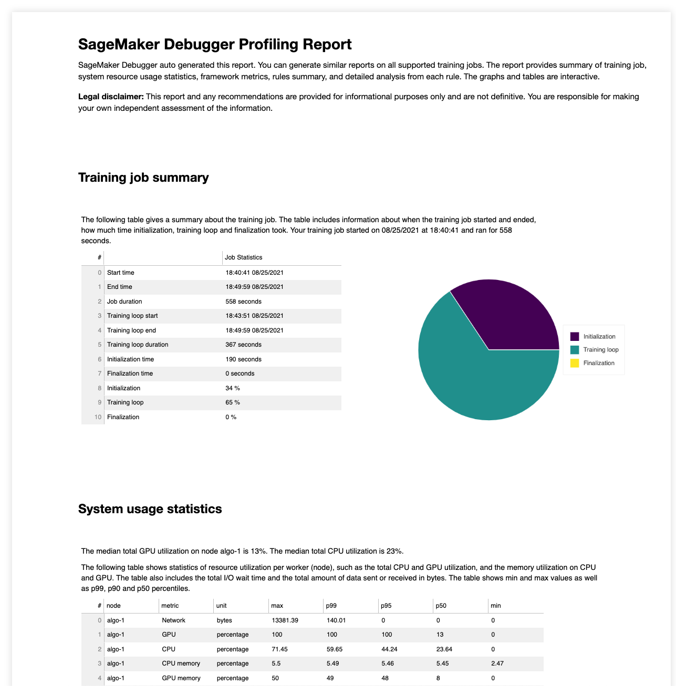
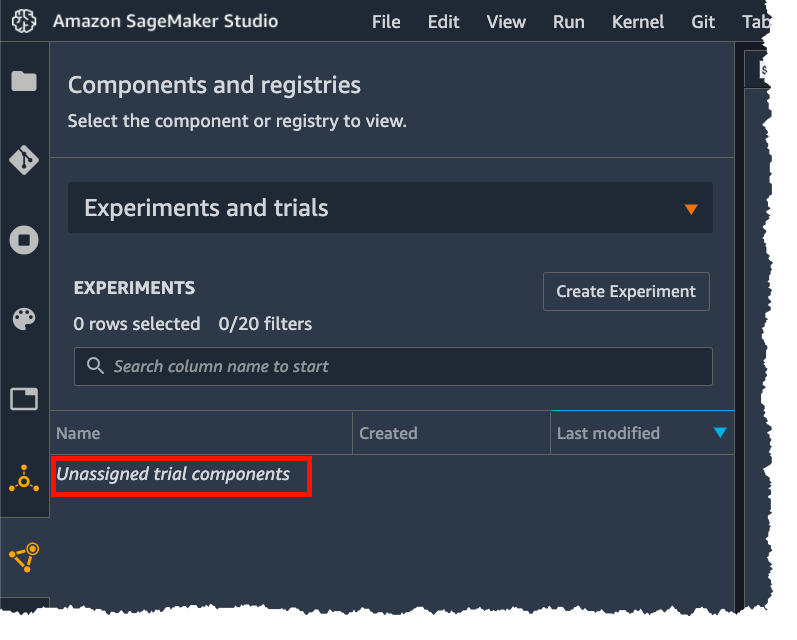 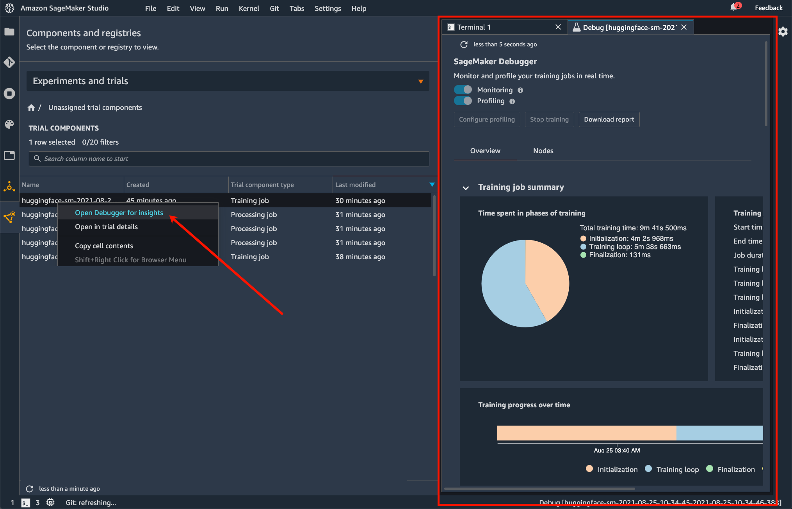
%%time
endpoint_name = f'huggingface-finetune-{time.strftime("%Y-%m-%d-%H-%M-%S", time.gmtime())}'
# create Hugging Face Model Class
huggingface_model = HuggingFaceModel(
model_data = huggingface_estimator.model_data, # S3 path to your trained sagemaker model
role = role, # IAM role with permissions to create an Endpoint
transformers_version = '4.6',
pytorch_version = '1.7',
py_version = 'py36'
)
# deploy model to SageMaker Inference
predictor = huggingface_model.deploy(
initial_instance_count = 1,
instance_type = "ml.m5.xlarge",
endpoint_name = endpoint_name
)test = pd.read_csv('data/test.csv')
test.head()%%time
pred_list = []
test_small = test # Predicting only on 100 rows, change this to predict on a larger number of rows
for idx, row in test_small.iterrows():
payload = {"inputs": row['text']}
pred = predictor.predict(payload)[0]
# rename label to prediction
pred['prediction'] = pred.pop('label')
# convert prediction value to int
pred['prediction'] = int(pred['prediction'].replace('LABEL_', ''))
pred_list.append(pred)test_small['prediction'] = pred_list
df_test = pd.concat([test_small.drop(['prediction'], axis=1), test_small['prediction'].apply(pd.Series)], axis=1)print(classification_report(df_test['label'], df_test['prediction']))from sklearn.metrics import confusion_matrix
import matplotlib.pyplot as plt
%matplotlib inline
import seaborn as sn
cm = confusion_matrix(y_true=df_test['label'], y_pred=df_test['prediction'])
cm = cm.astype('float') / cm.sum(axis=1)[:, np.newaxis]
sn.set(rc={'figure.figsize': (11.7,8.27)})
sn.set(font_scale=1.4) # for label size
sn.heatmap(cm, annot=True, annot_kws={"size": 10}) # font size
plt.title('Confusion Matrix of the Test Data', fontsize=14)
plt.ylabel('Real Class', fontsize=12)
plt.xlabel('Predicted Class', fontsize=12)
plt.show()Output: 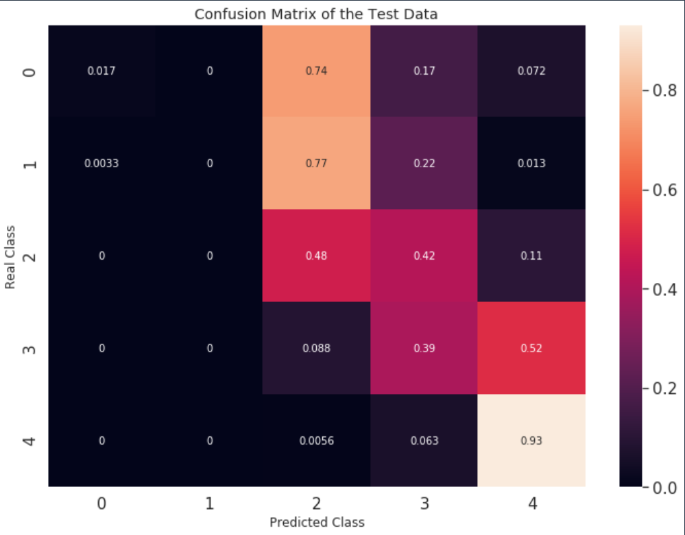
# client = boto3.client('sagemaker')
# endpoint = client.list_endpoints()['Endpoints']review_num = 15
payload = {"inputs": [test['text'].iloc[review_num]]}
predictor = HuggingFacePredictor(endpoint_name=endpoint_name,
sagemaker_session=sagemaker_session
)
result = predictor.predict(data=payload)[0]
print(f"Predicted \033[1m{result['label']}\033[0m with score of \033[1m{round(result['score'], 2)}\033[0m. Real label is \033[1m{test['label'].iloc[review_num]}\033[0m. Full sentence:\n\n{test['text'].iloc[review_num]}")Output: 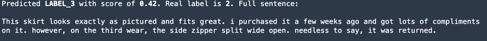
client = boto3.client('sagemaker-runtime')
payload = {"inputs": [test['text'].iloc[review_num]]}
user_encode_data = json.dumps(payload).encode('utf-8')
response = client.invoke_endpoint(EndpointName=endpoint_name,
Body=user_encode_data,
ContentType='application/json'
)
result = json.loads(response['Body'].read())[0]
print(f"Predicted \033[1m{result['label']}\033[0m with score of \033[1m{round(result['score'], 2)}\033[0m. Real label is \033[1m{test['label'].iloc[review_num]}\033[0m. Full sentence:\n\n{test['text'].iloc[review_num]}")Output:
Make sure you delete the SageMaker endpoints and S3 artifacts to clean up.
Delete endpoint:
# predictor.delete_endpoint()Delete S3 artifacts:
# s3 = boto3.resource('s3')
# bucket = s3.Bucket(bucket)
# bucket.objects.filter(Prefix=f"{prefix}/").delete()
# print(f"\nDeleted contents of {bucket}/{prefix}")